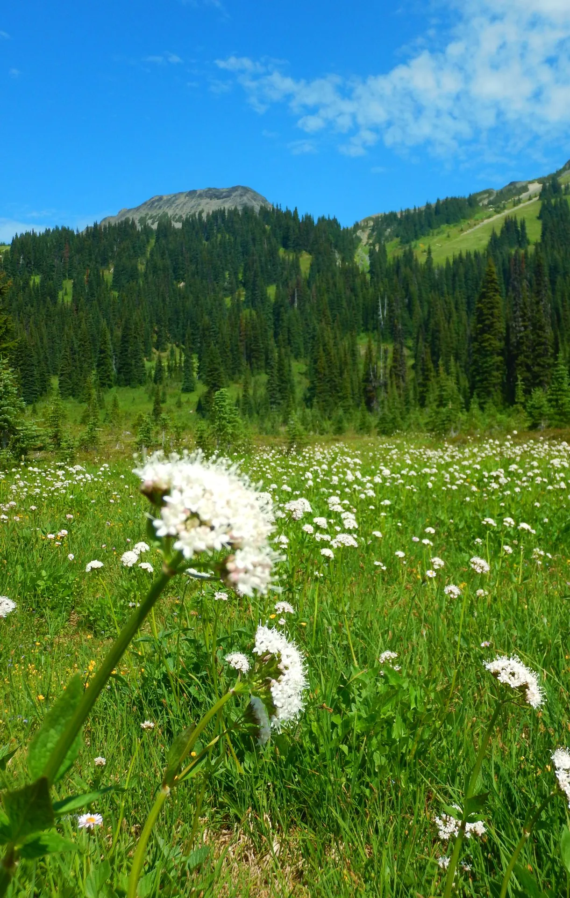
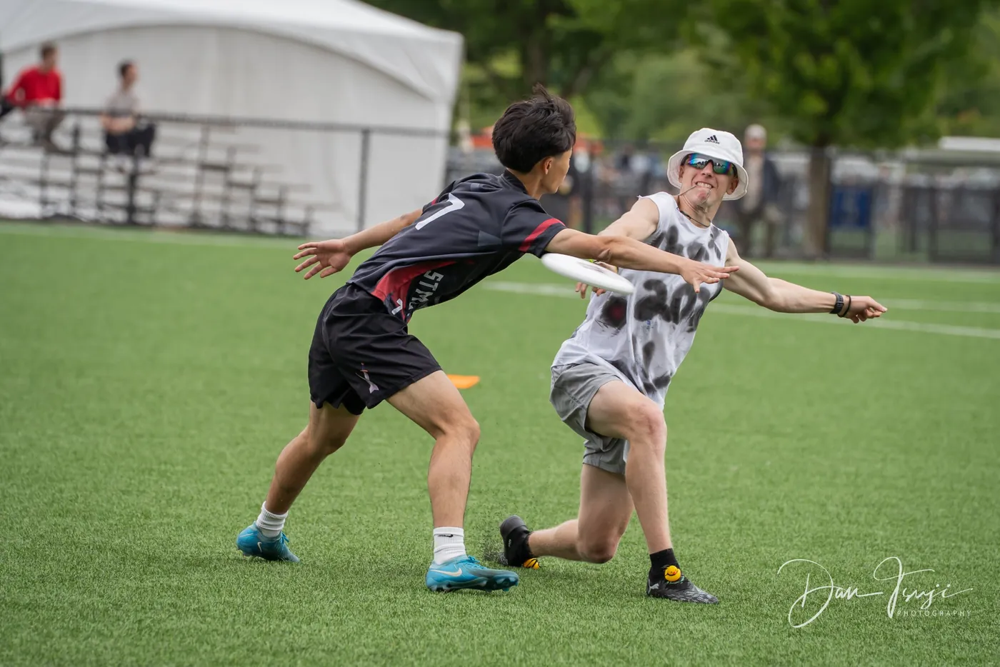
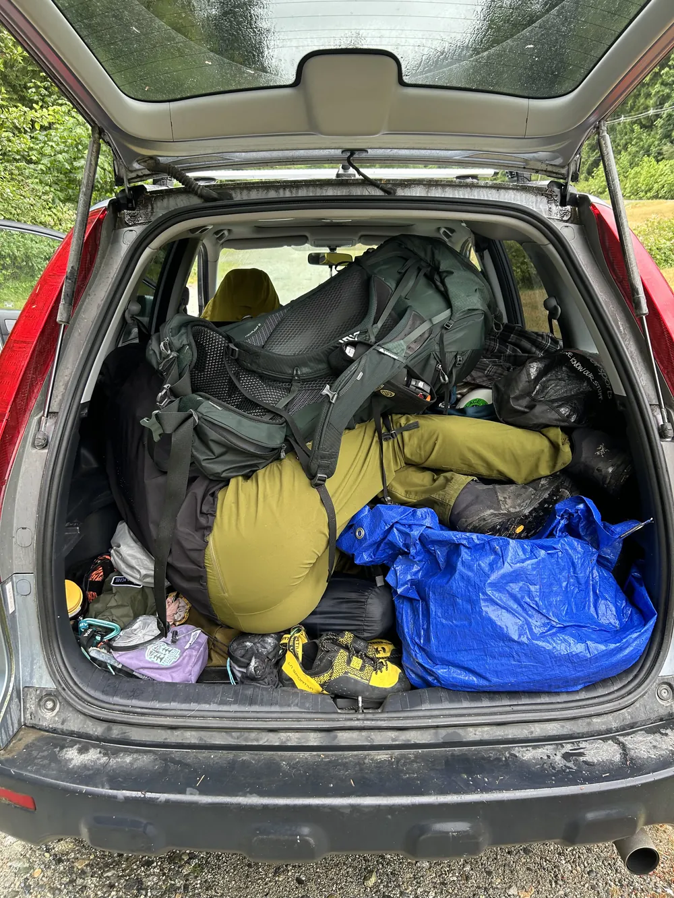
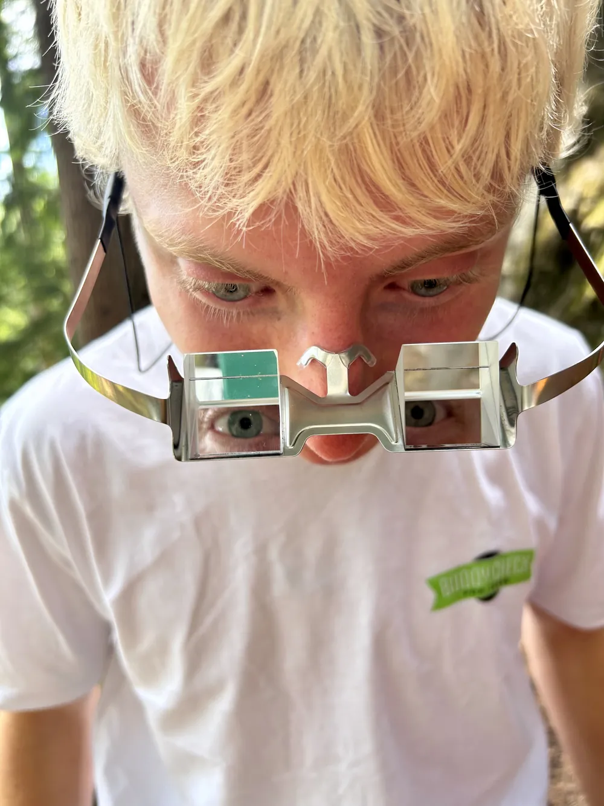

Website designer · Scrambler · Ultra runner
Ezra Vernon
Getting outside, exploring, and stepping a little further out of my comfort zone every time.
Welcome to my page!
A home for everything me.



About me
Outside, mostly.
I love getting outside, exploring, making new friends, and stepping out of my comfort zone!
My favourite sport is skiing, but I love ultimate frisbee, soccer, rock climbing, and ultra running as well.
- Skiing — favourite
- Ultimate frisbee
- Soccer
- Rock climbing
- Ultra running
- Favourite ice cream
- The Tonight DoughBen & Jerry’s
- All-time favourite colour
- Turquoise
- Second biggest fear
- Darkness
Life mantra
Live in the balance between two extremes.